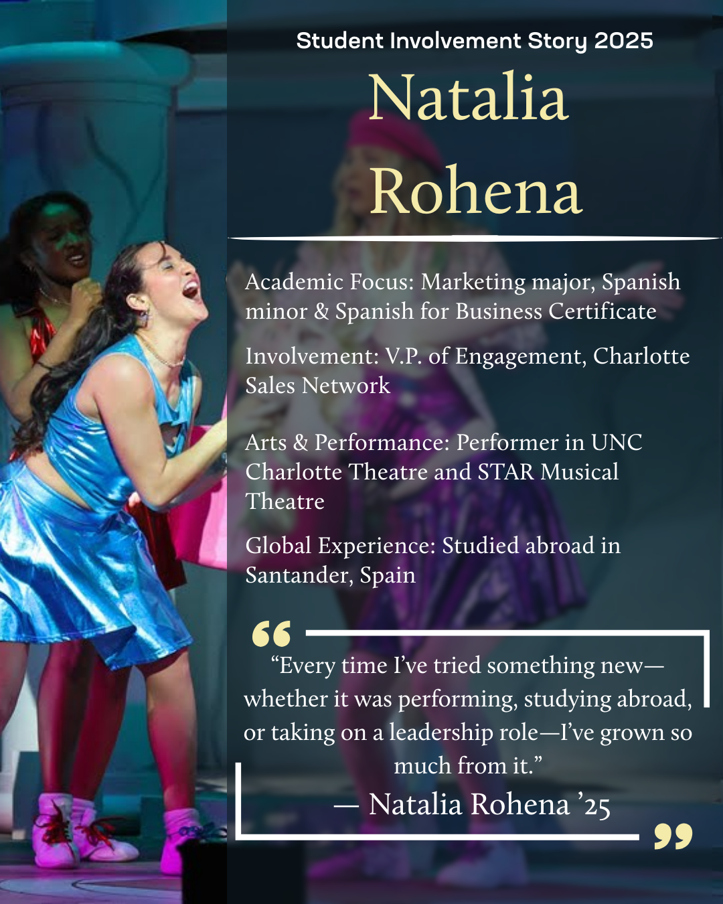

I develop and execute digital marketing content across social media, digital signage, and web platforms, with a focus on increasing student engagement and event participation.
My role involves collaborating with campus organizations to align messaging, identify opportunities, and create cohesive, cross-promotional campaigns. I apply trend analysis and audience insights to ensure content is both relevant and effective across platforms.
Beyond execution, I regularly connect with campus partners to identify new campaign opportunities and ensure messaging remains aligned across departments, allowing us to reach broader audiences more effectively.
Core Deliverables
1–2 reels per week (event + resource focused)
Student spotlight posts + blog support
Cross-campus collaboration content
LCD screen graphics + supporting assets
Channels
Instagram (Reels, Posts, Stories)
LinkedIn (select features)
Career Center blog
Campus LCD screens
Performance Tracking
I tracked content performance using Google Sheets to analyze engagement patterns across posts, comparing metrics such as reach, likes, and content format.
These insights informed content decisions, allowing me to refine posting strategies, optimize timing, and prioritize high-performing content styles. This approach improved overall engagement and ensured content was aligned with student interests and behavior.
Event Marketing Through Short-Form Video
Short-form video content was developed around high-relevance campus moments and current trends, allowing campaigns to feel timely while clearly communicating key event and resource information.
Content was structured to capture attention quickly, reinforce messaging, and drive student action.
Developed a repeatable storytelling format across social and web platforms to highlight student experiences and connect involvement to career development outcomes.
This approach increased relatability and helped position Career Center resources as valuable and accessible to students.
Blog Header DesignWeb header used for student spotlight articlesStudent Spotlight HeaderAlternate header variation for student feature stories

Instagram Spotlight GraphicTemplate-based storytelling post for student features
Digital Signage
Designed bold, high-readability LCD graphics to promote Career Center resources and events across campus screens.
LCD Screen GraphicDesigned for distance readability + quick event details
.png)